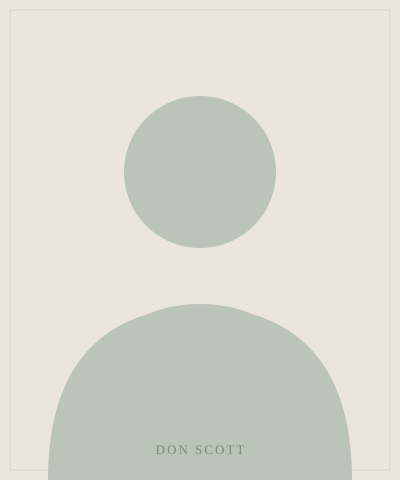

Bedford, New York · 2025
Bedford deserves a choice.
I'm Don Scott, and I'm running for Bedford Town Supervisor. Not to run a traditional campaign — to show that a neighbor talking honestly with neighbors can matter more than signs, mailers, and consultants. No pressure. No theater. Just a genuine offer to be of service.

A different kind of campaign
A campaign that behaves differently.
Most campaigns follow a familiar script. This one doesn't. Here's what that actually means in practice.
-
No door knocking
Your home is yours. If you'd like to talk, I'm easy to find. I won't show up uninvited.
-
No junk mail
No mailers, no glossy flyers. Your recycling bin is safe from this campaign.
-
No robocalls. Ever.
If you hear from this campaign, it won't be an automated voice interrupting your evening.
-
No consultant class
No political operatives. No message-tested soundbites. No one paid to make me sound like someone I'm not.
-
Every dollar is public
This campaign has a $49.99 spending cap. Every cent is documented and posted as a public record.
-
AI used openly
This site was built with AI assistance. We're not hiding it. We think that's more interesting than pretending otherwise.
Radical transparency
The public spending record.
This campaign has committed to spending $49.99 or less — total. Not per week. Ever. Every dollar spent is documented here as a public record, updated as it happens.
Full itemized record → View the spending page
AI transparency
Yes, AI helped build this campaign.
We're not hiding it. Claude, Anthropic's AI assistant, helped design this site, draft copy, think through strategy, and build civic tools. A human reviewed everything before it went live. We think being open about that is more useful than pretending it didn't happen.
We also think it's worth showing how a small local campaign can use the same technology that large organizations pay millions to access — and do it for under fifty dollars.
Transparent by design. We document every AI-assisted tool and asset so you can see exactly what was built, how, and why.
Human review always. No AI output goes public without a human reading it first. The AI drafts. Don decides.
No fabricated facts. If something is uncertain, we say so. We don't let the AI invent positions or make up statistics.
A civic demonstration. We want to show Bedford residents what this technology can actually do — and how you can use it too.
Common questions
A few things people ask.
Straightforward answers to the questions we hear most often.
Because uncontested elections aren't healthy for a community. Bedford deserves to have a choice, even if — especially if — that choice is an uphill one. I'm not running because I'm certain to win. I'm running because the race shouldn't go uncontested, and because I have something genuine to offer.
The Town Supervisor is Bedford's chief executive. The role involves running town government day-to-day, chairing the Town Board, managing the town budget, and representing Bedford in its dealings with county and state agencies. It's a hands-on local job — not a platform for national politics.
Because it operates by rejecting most of what modern campaigns treat as standard practice. No door knocking, no mailers, no robocalls, no consultants, no pressure tactics. The behavior is the message. If we're asking Bedford to trust us with local government, the least we can do is behave respectfully while we're asking.
That's the commitment. The spending cap is $49.99, total, for the entire campaign. Every dollar spent is documented on the spending page. The constraint is intentional — it forces creativity and proves the point that good civic engagement doesn't require a war chest.
Yes, openly. Claude, Anthropic's AI assistant, helped design this website, draft copy, and support strategic thinking. Every AI output was reviewed by a human before going live. We think this is worth being transparent about — not just because it's honest, but because it's genuinely interesting to show what's now possible for a local campaign on a minimal budget.
Use the Request a Conversation page to reach out directly. You can also submit a question through Ask Don — Don reads and responds to those personally.